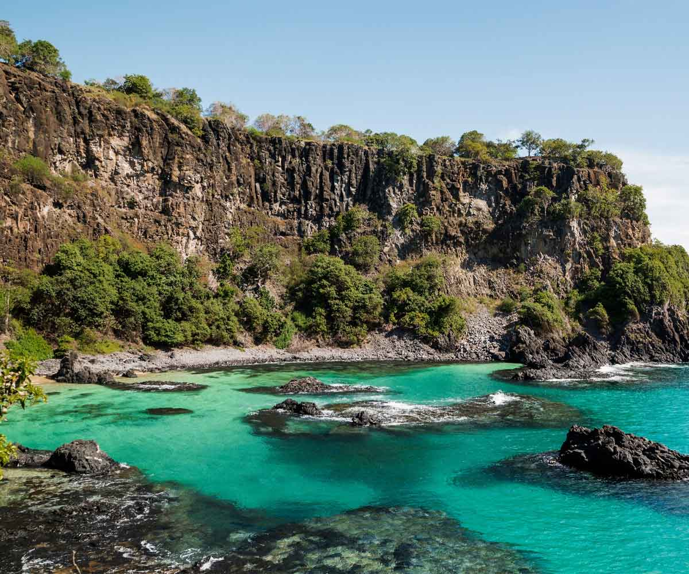
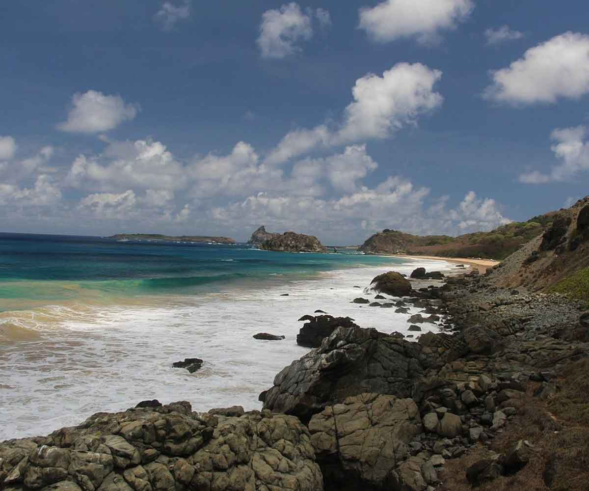
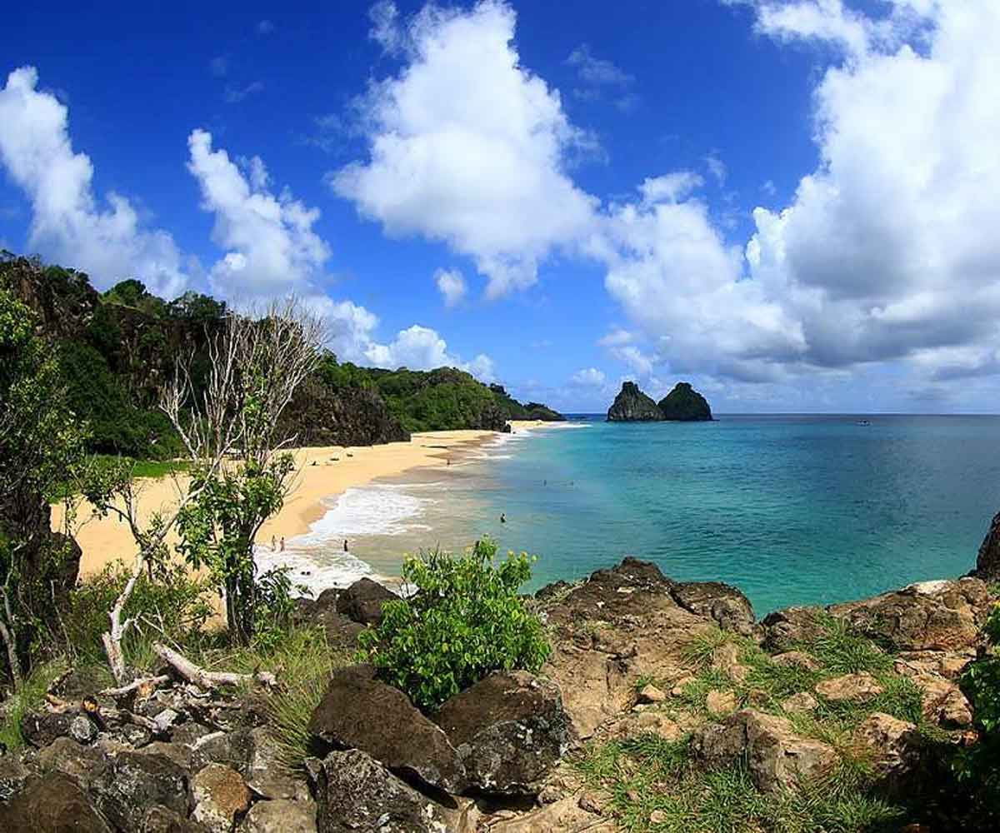

Trilha das Esmeraldas: O Coração de Fernando de Noronha



Caminhe pelas praias mais famosas do mundo
e termine o dia na icônica Baía dos Porcos." @noronhalocal
e termine o dia na icônica Baía dos Porcos." @noronhalocal
💎 ROTEIRO PANORÂMICO
A Trilha das Esmeraldas percorre o trecho mais famoso do litoral de Noronha. Em um percurso dinâmico de 3,7 km, você visitará praias icônicas como a do Cachorro, Meio e Conceição, culminando na deslumbrante Baía dos Porcos. É a escolha perfeita para quem busca cenários dignos de cartão-postal com um nível de esforço moderado.
Praias Visitadas
Cachorro, Meio, Conceição, Boldró, Americano, Bode, Cacimba do Padre e a icônica Baía dos Porcos.
Ponto Alto
A subida pela Encosta do Morro do Pico oferece uma das vistas mais espetaculares e completas de toda a ilha.
3,7 km
Extensão
Médio
Dificuldade
4 Horas
Duração Média
Para Aproveitar Melhor
🎒 O que levar:
- Calçados firmes (Areia e Pedras)
- Traje de banho e Toalha
- Máscara e Snorkel
- Câmera ou Celular (Cenários únicos)
☀️ Proteção e Energia:
- Protetor solar e Chapéu
- Água e lanches leves
- Atenção à tábua de marés
- Disposição para subidas leves
Mais Procurado
Quer conhecer as praias mais lindas?
Nossos guias conhecem os melhores pontos para fotos e mergulho na Costa Esmeralda.
AGENDAR ROTEIRO